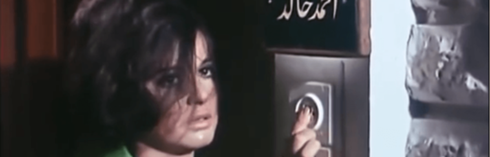
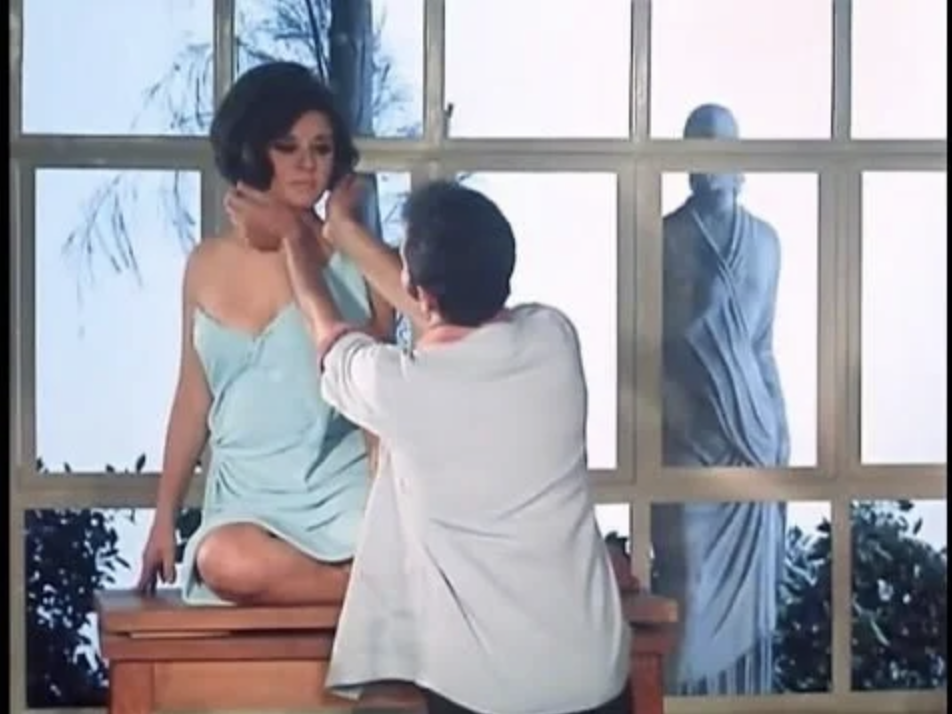

Salah Abu Seif's Shi Min Azab (Something of a Torture, 1969) starring Souad Hosni
There's something of a torture in having to watch two hours of high-octane drama accompanied by a cartoonish soundtrack and the melodramatic storytelling of certain Arabic films. Yet despite this feeling, there are many joys to relish about Souad Hosni vehicle Shi Min Azab (A Bit of Torment, 1969).
Directed by Salah Abu Seif (1915-1996) — known as the "father of realist cinema" — and scripted by Ahmed Ragab (1928-2014), Egypt's most famous satirist turned scriptwriter (a feat he would undertake for nine other films), it tells the unfortunate story of a young woman who escapes her stepfather's sexual advances and seeks refuge in the summer house of the reclusive artist Ahmed Khaled. It all takes place against the backdrop of the picturesque Agami resort area, the Egyptian Riviera of old.
The film opens with Souad Hosni running feverishly along a sandy beach, with a parody of horse racing music in the background, until she reaches the house of Ahmed and his labrador Bisco. She rings his doorbell incessantly, until the stern and dismissive patriarch, brilliantly played by the imposing and stilted Yehia Chahine, opens the door and questions her mercilessly. Hosni's character begins her charming habit of compulsive lying, a trait she maintains throughout the film.
The elaborate lying of Hosni's character is only eclipsed by her elaborate eye makeup, which stays exactly the same throughout the film, prompting us to wonder about the realism of both it and the story. Harboring a deep secret, she tries to woo Ahmed, and he both resists and responds, swinging back and forth in hesitation. The dynamic of the ageing patriarch falling for a beautiful young woman, yet hampered by reason and the fear of social ostracism, runs throughout the film.
The next day, dressed in Ahmed's pajamas, Hosni's character encounters his disciple and student Sherif, played by the perpetually flummoxed and insupportably obnoxious Hassan Youssef. An aspiring sculptor, he is immediately taken by the vivacious and beautiful woman, who concocts another set of elaborate lies to explain her presence (she poses as Ahmed's niece, visiting from Khartoum). Completely smitten, his role is restricted to being her puppy.
The trio then starts to develop a love triangle, where both Ahmed and Sherif fall for her, and she projects her need for a "real father figure" onto Ahmed.
Wanting to make sure she can stay, she does her best to make herself indispensible to Ahmed (making him breakfast, dinner, coffee and so on), in the meantime burning one of her only two items of clothing, her white skirt. Ahmed brushes off her solicitations, asking his student to buy her a new dress and send her off. She practically seduces Sherif into making a statue of her, and in the following scene a blue dress magically appears, with her posing and Sherif "sculpting."

The artist's sanctuary and the complex dynamics between the three protagonists
Perhaps one of the most interesting aspects of them film is the representation of "the artist," as how he is perceived — as reclusive, well-off, socially respected individual — at the time the film was made. From the very start, we understand that Ahmed is a public figure, recognized and respected for his art.
He is even notified by the police that he has been chosen for the Venice Biennale when the Culture Ministry can't reach him. Such details would dramatically change in the representations of artist (if any) in Egyptian cinema from then onward.
The film also shows the "artist at work": Ahmed painting Hosni, and Sherif sculpting her. In both instances the depiction is illogical and naïve — Ahmed paints directly on canvas with the end results immediately visible, or he sketches her while she runs on the beach almost a mile away — but the fact that a character introduces himself as an artist and is then shown creating artwork is not something that can be seen often in Egyptian film.
Things escalate pretty quickly and next thing we know Sherif asks Hosni's hand in marriage from Ahmed. Ahmed is then forced to examine his own relationship with her. It doesn't help that the next day she is seen swimming at the beach, emerging in classic femme-fatale style from the sea to run toward the camera. Ahmed offers token resistance and decides to ask her to pose for him. While she sits for Ahmed, they discuss Sherif's proposal and what love means for the artist.
This notion of love as art's primary motive is almost opposite to the state ideology in the wake of the 1967 defeat. The defeat caused profound questioning in the artistic community of the time, and Nasser and his regime were forced to scale back their populist, propagandistic notions of what art and culture should mean and how they serve the public interest.
Love as defining characteristic of meaningful artwork is reinforced in the following scenes, when Ahmed praises the sculpture of Hosni's character made by Sherif. The complexity of the love triangle takes a new level when she indirectly admits that she's in love with Ahmed, and Ahmed, unable to reconcile himself with the precarious situation, asks her to leave to spare herself and him the grave consequences of their relationship.
She doesn't take his reaction very well and starts marching into the sea to drown herself. In a later scene, her whispered meditation on the agony of despair gives a glimpse of her future forays into more memorable dramatic roles — until then Hosni has remained the playful, exuberant girl we were used to seeing in the light romantic comedies she participated in until then.
The heaviness of the suicide attempt is offset by Abdel Moniem Madbouly's appearance as an eccentric, funny composer, offering comic relief. Madbouly almost howls catcalls at Hosni and sings her a song that's a medley of popular tunes. But the comedy soon turns tragic, when Madbouly mentions that he has invited TV channels to come film Ahmed at his artistic retreat. Hosni's character panics and, fearing exposure, accepts Sherif's renewed proposal of marriage. The couple then divulges the news of their engagement to Ahmed, who is torn yet again between his feelings for her and the dictates of reason and propriety. The swinging back and forth unravels across the remainder of the film, while Sherif discovers the woman's dark secret.
The trial is the most visually interesting part of the film. It is shot as a slide show of black-and-white photos, mostly portraits of the main characters, with the voiceover of Hosni's character's attorney. Ahmed's portrait freezes on the screen while statements such as "he forgot his old age, his dignity and respect — he forgot all values for his vile quest to fulfill his desires from a young girl," can be heard. The images cut to flashbacks of Hosni running on the beach, or affectionately touching Ahmed's face, and then to black-and-white portraits of him distressed and remorseful.
A Bit of Torment offers a unique perspective on the lives and representations of artists in the late Nasser period, a rare topic in Egypt cinema. It is also a fascinating showcase of Souad Hosni's wide range and acting abilities. While not necessarily realistic, it's certainly exacting on the visual and dramatic levels.